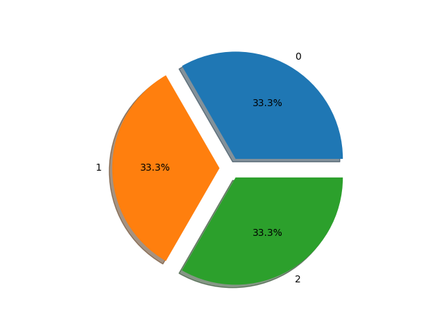
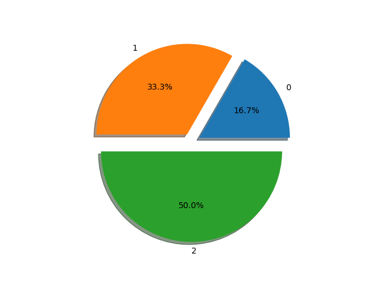
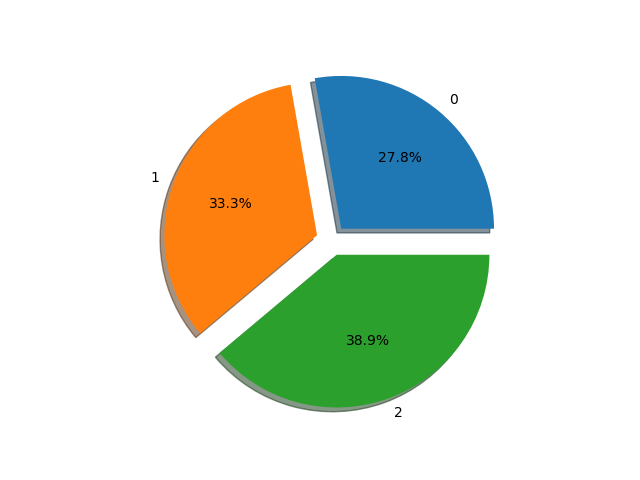

Note
Click here to download the full example code
Usage of the ratio parameter for the different algorithm¶
This example shows how to use the ratio parameter in the different
examples. It illustrated the use of passing ratio as a str, dict or
a callable.
# Authors: Guillaume Lemaitre <g.lemaitre58@gmail.com>
# License: MIT
from collections import Counter
import matplotlib.pyplot as plt
from sklearn.datasets import load_iris
from imblearn.datasets import make_imbalance
from imblearn.under_sampling import RandomUnderSampler
print(__doc__)
def plot_pie(y):
target_stats = Counter(y)
labels = list(target_stats.keys())
sizes = list(target_stats.values())
explode = tuple([0.1] * len(target_stats))
fig, ax = plt.subplots()
ax.pie(sizes, explode=explode, labels=labels, shadow=True,
autopct='%1.1f%%')
ax.axis('equal')
Out:
/home/glemaitre/Documents/packages/scikit-learn/sklearn/feature_extraction/text.py:17: DeprecationWarning: Using or importing the ABCs from 'collections' instead of from 'collections.abc' is deprecated, and in 3.8 it will stop working
from collections import Mapping, defaultdict
/home/glemaitre/Documents/packages/scikit-learn/sklearn/ensemble/weight_boosting.py:29: DeprecationWarning: numpy.core.umath_tests is an internal NumPy module and should not be imported. It will be removed in a future NumPy release.
from numpy.core.umath_tests import inner1d
Creation of an imbalanced data set from a balanced data set¶
We will show how to use the parameter ratio when dealing with the
make_imbalance function. For this function, this parameter accepts both
dictionary and callable. When using a dictionary, each key will correspond to
the class of interest and the corresponding value will be the number of
samples desired in this class.
iris = load_iris()
print('Information of the original iris data set: \n {}'.format(
Counter(iris.target)))
plot_pie(iris.target)
ratio = {0: 10, 1: 20, 2: 30}
X, y = make_imbalance(iris.data, iris.target, ratio=ratio)
print('Information of the iris data set after making it'
' imbalanced using a dict: \n ratio={} \n y: {}'.format(ratio,
Counter(y)))
plot_pie(y)
- 
- 
Out:
Information of the original iris data set:
Counter({0: 50, 1: 50, 2: 50})
Information of the iris data set after making it imbalanced using a dict:
ratio={0: 10, 1: 20, 2: 30}
y: Counter({2: 30, 1: 20, 0: 10})
You might required more flexibility and require your own heuristic to determine the number of samples by class and you can define your own callable as follow. In this case we will define a function which will use a float multiplier to define the number of samples per class.
def ratio_multiplier(y):
multiplier = {0: 0.5, 1: 0.7, 2: 0.95}
target_stats = Counter(y)
for key, value in target_stats.items():
target_stats[key] = int(value * multiplier[key])
return target_stats
X, y = make_imbalance(iris.data, iris.target, ratio=ratio_multiplier)
print('Information of the iris data set after making it'
' imbalanced using a callable: \n ratio={} \n y: {}'.format(
ratio_multiplier, Counter(y)))
plot_pie(y)
Out:
Information of the iris data set after making it imbalanced using a callable:
ratio=<function ratio_multiplier at 0x7f7b6d3dd4d0>
y: Counter({2: 47, 1: 35, 0: 25})
Using ratio in resampling algorithm¶
In all sampling algorithms, ratio can be used as illustrated earlier. In
addition, some predefined functions are available and can be executed using a
str with the following choices: (i) 'minority': resample the minority
class; (ii) 'majority': resample the majority class, (iii) 'not
minority': resample all classes apart of the minority class, (iv)
'all': resample all classes, and (v) 'auto': correspond to ‘all’ with
for over-sampling methods and ‘not minority’ for under-sampling methods. The
classes targeted will be over-sampled or under-sampled to achieve an equal
number of sample with the majority or minority class.
ratio = 'auto'
X_res, y_res = RandomUnderSampler(ratio=ratio, random_state=0).fit_sample(X, y)
print('Information of the iris data set after balancing using "auto"'
' mode:\n ratio={} \n y: {}'.format(ratio, Counter(y_res)))
plot_pie(y_res)

Out:
Information of the iris data set after balancing using "auto" mode:
ratio=auto
y: Counter({0: 25, 1: 25, 2: 25})
However, you can use the dictionary or the callable options as previously mentioned.
ratio = {0: 25, 1: 30, 2: 35}
X_res, y_res = RandomUnderSampler(ratio=ratio, random_state=0).fit_sample(X, y)
print('Information of the iris data set after balancing using a dict'
' mode:\n ratio={} \n y: {}'.format(ratio, Counter(y_res)))
plot_pie(y_res)
def ratio_multiplier(y):
multiplier = {1: 0.7, 2: 0.95}
target_stats = Counter(y)
for key, value in target_stats.items():
target_stats[key] = int(value * multiplier[key])
return target_stats
X_res, y_res = RandomUnderSampler(ratio=ratio, random_state=0).fit_sample(X, y)
print('Information of the iris data set after balancing using a callable'
' mode:\n ratio={} \n y: {}'.format(ratio, Counter(y_res)))
plot_pie(y_res)
plt.show()
- 

Out:
Information of the iris data set after balancing using a dict mode:
ratio={0: 25, 1: 30, 2: 35}
y: Counter({2: 35, 1: 30, 0: 25})
Information of the iris data set after balancing using a callable mode:
ratio={0: 25, 1: 30, 2: 35}
y: Counter({2: 35, 1: 30, 0: 25})
/home/glemaitre/Documents/packages/imbalanced-learn/examples/plot_ratio_usage.py:134: UserWarning: Matplotlib is currently using agg, which is a non-GUI backend, so cannot show the figure.
plt.show()
Total running time of the script: ( 0 minutes 0.753 seconds)